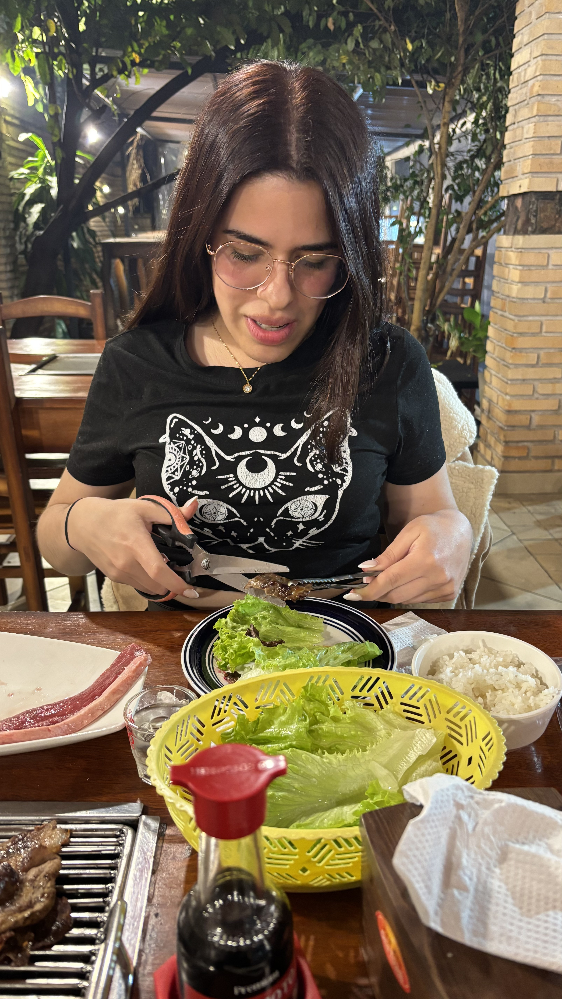

Como no tengo linda letra, te escribo de la forma en donde más me esmero... programándote una página web jajajajaja. Tampoco no quiero que me tomes como una persona embustera o engañosa... esto está escrito 100% por mí, lo único que hizo la máquina es compilar mi código, levantar la web y ayudarme con los estilos... el resto está hecho 100% por mí (el agua la tomé yo, no la IA) :)
Bueno con esa intro ya te imaginas que soy muy autista jajajajajaja... pero x, soy bastante boludo y por eso a veces no cacho nada, me cuesta ser directo o puedo decir cosas que se mal interpreten... por eso te pido perdón si alguna vez dije algo que te hizo dudar o sentir que no estaba siendo sincero... Creo que esto me hace vulnerable a sentir que te estoy sacando la oportunidad de estar con alguien mejor, pero no quiero eso y odiaría que eso pase... suena muy yandere pero así me siento (síndrome del impostor XD) pero no hay día que me sienta tan afortunado de que me quieras, que me hayas dado tantas oportunidades y me hagas sentir especial, en nuestra propia manera jejejejeje... No creas que la temática de nuestra relación me molesta, me gusta ser tu perrito, me gusta que me trates agresivamente porque después me llenas de mimos y es muy reconfortante... hace que sea más divertido y dinámico!! me llena de dopamina ajajajajaja pero bueno, no soy Shakespeare pero te cuento las razones por la cual hace que esto que tenemos, para mí, sea muy especial y hace que te quiera tanto:
(Toca cada punto para que aparezcan uwu)
- Me gusta tu forma de ser, tu voz, tu sonrisa, tus pies, tus axilas, tu ser en general... sos lo más parecido a una ninfa de las antigua Grecia... sé que dicen que sentirse atraído por alguien solo por su cuerpo es muy superficial pero siento que me atrae de la forma más instintiva posible... tan natural como el mismo deseo... al final de cuentas, soy tu perrito woof woof.
- Me aceptas tal y como soy... no soy una persona atractiva, soy nerd, lerdo, otaku, no tengo muchos "atributos" XD... pero igual así me siento que en serio me querés, me siento deseado y como tu plaything te estoy dando cierto tipo de satisfacción... eso me parece demasiado especial y creo que opaca todas las preocupaciones que tengo.
- Me hiciste cambiar muchas cosas de mi estilo de vida... la primera vez me hiciste ver que estaba a punto de tirar algo por no querer salir de mi zona de comfort... una merecida sacudida que creo que también lo hiciste por frustración y me hizo sentir como un bobo... darme cuenta que le frustro a la persona que me gusta me hizo sentir como la mierda pero me ayudó a pelear por lo que quería, y lo que quería era estar contigo uwu.
- Me escuchas, me entendés y te preocupas por mí... nunca quise ser una carga para nadie, no me gusta crear problemas a nadie, me gusta solucionar y pasar desapercibido... pero me hiciste entender que necesitaba a alguien que esté ahí... no por obligación sino por algo más sincero... no sé si ves esto como la psicóloga de Tony Soprano ajajajajaja pero igual me parece especial que estés ahí para mí siempre.
- Me compartiste tu intimidad... para mí eso es irremplazable y muy especial, me tenés una confianza tremenda y eso me dio un boost de amor tremendo. estar pegados cuerpo a cuerpo, compartir de forma natural y que me cumplas todos mis fetiches es TREMENDO, me siento como en un sueño pero contigo y eso es más emocionante y candente (erección digital XD).
- Sos una personas interesante... me gusta saber más de vos, quiero saber más de vos, quiero alardearte en frente de mis padres y amigos (aunque sé que te vas a morir de la vergüenza/cringe ajajajajaja) pero eso me hace sentir que sea más especial.
- Siento que puedo avanzar seguro contigo... aunque aún no te confesé todo lo que siento porque sé que mereces que sea tan especial como todo lo que siento contigo... me tenés una paciencia admirable jajajajaja pero no te preocupes... te voy a pedir que seas mi novia de la forma que mi domina se merece uwu.
- Me comí todos los chocolates que me diste, eso es especial (?.
- Por más de que trate... me duele imaginar que te enojes conmigo, sé que es parte del play pero a veces me tomo muy en serio las cosas ajajajajaja.
- Me aceptaste una cena, que no merecía pero me aceptaste y me diste un lindo recuerdo <3

- Esa misma noche tuvimos la intimidad más SEXY, ARDIENTE, TIERNA y ESPECTACULAR... hasta el punto que casi te pedí ser mi novia en medio del acto... pero iba a ser muy anadie jajajajaja ya te dije tiene que ser muy especial.
- La música que puse de fondo describe lo que siento por vos, cada vez que la escucho me acuerdo de vos.
- Siempre pienso en vos, tanto de forma NSFW y SFW jajajajajaja
Quiero escribirte más cosas pero sé que me vas a odiar por llenar la página de texto XD así que con esto espero que, y de la forma más sincera, sientas que lo nuestro es tan especial como lo siento yo.